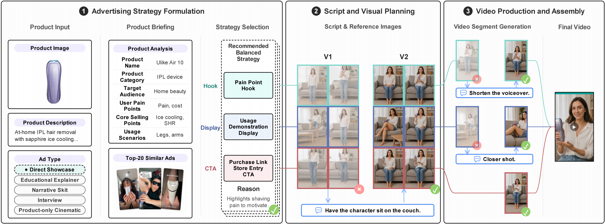
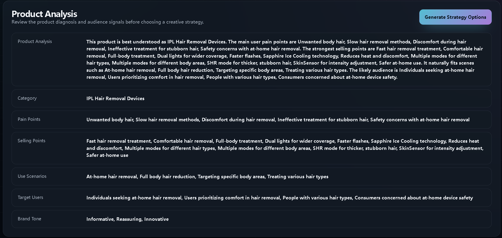
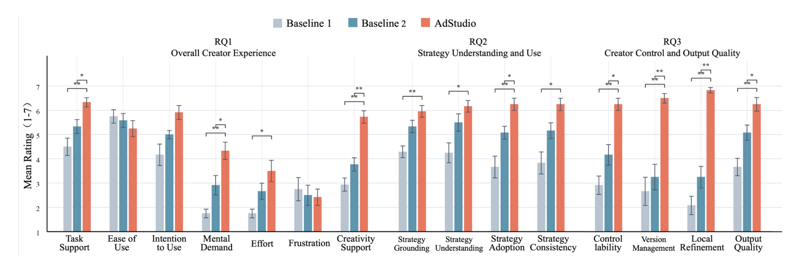
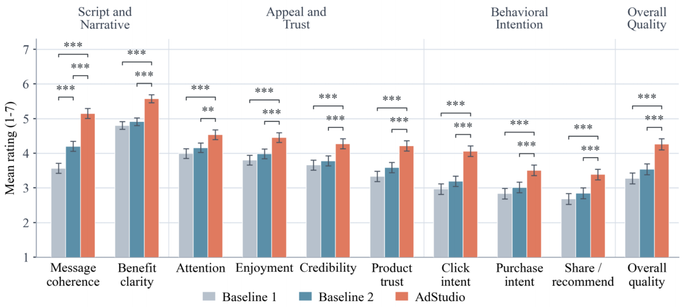

ACM CHI · 2027
AdStudioA Strategy-Guided System for Controllable Human-AI Co-Creation of Short Video Ads
Under review at ACM CHI 2027
1. What is AdStudio?
We present AdStudio, a strategy-guided human–AI co-creation system for controllable short-video advertising. Its end-to-end workflow guides creators through “product input → product analysis → retrieval of high-performing videos → strategy generation and selection → generation and iterative refinement of reference images, scripts, and video segments → final video assembly.”

1.1 Five Ad Formats
Through this workflow, AdStudio produces finished short-video ads in five formats. The examples below show how the same product can be presented in each format.
Direct Showcase
A presenter explains the product and its key benefits.
Educational Explainer
Explains how the product or its ingredients work.
Narrative Skit
Introduces the product through a short story or scenario.
Interview
Presents the product through questions and personal experiences.
Product-only Cinematic
Showcases the product through cinematic shots, without a presenter.
1.2 Hook–Display–CTA Structure
Across all five formats, each ad follows the same three-part structure: Hook, Display, and CTA. This aligns with TikTok’s recommended hook–body–close framework and the familiar advertising pattern of attracting attention, presenting product value, and prompting action.
-
Hook · first 8 seconds
Capture attention with a pain point, curiosity, or a product promise.
-
Display · middle 8 seconds
Show the product in action and demonstrate its key benefits.
-
CTA · final 8 seconds
Encourage action with a recommendation, offer, or purchase cue.
| Time / Stage | 00:00–00:08Hook | 00:08–00:16Display | 00:16–00:24CTA (Call to Action) |
|---|---|---|---|
| Video | |||
| Voiceover | “Tired of dull skin and fine lines? This balm is my secret for a youthful, radiant glow.” |
“Watch this balm glide effortlessly. With Volufiline for volume and PDRN for bounce, it instantly smooths lines and boosts radiance.” |
“Get your visibly plumper, youthful glow. This multi-balm is your ultimate on-the-go solution.” |
2. Why We Developed AdStudio
2.1 The Rise of AI-Generated Short-Video Ads
- Growing demand. Short-video ads are increasingly important in e-commerce, driving demand for scalable production.
- Lower production barriers. GenAI supports efficient, low-cost ideation, scripting, and image and video generation.
2.2 Learning from Six Industry Practitioners
To identify challenges in current AI-assisted short-video ad creation, we interviewed 6 industry practitioners, including an AI video advertising company lead, independent e-commerce video creators, and an overseas beauty brand executive. Each session lasted approximately 60 minutes and included a 30-minute think-aloud ad-generation task using participants’ regular tools.
AI Video Advertising Company Leaders
Independent E-commerce Video Creators
Overseas Beauty Brand Executives
2.3 Challenges and Design Goals
| Challenges & Practitioner Quotes | Corresponding Design Goals |
|---|---|
|
C1
Fragmented tools disrupt workflow continuity
|
DG1 Connect all stages of ad creationCreate the ad in one connected workflow, from product analysis to the final video, without repeatedly copying information between tools. |
|
C2
Finding and adapting ad strategies to a new product is hard
|
DG2 Help creators find strategies that fit their productsUse relevant high-performing ads as references to develop, compare, and choose strategies suited to the target product. DG3 Carry the selected strategy through every stageUse the chosen strategy to guide scripts, reference images, and video segments, keeping the final ad aligned with the creator’s intent. Cross-cutting goal: addresses both C1 and C2. |
|
C3
Revising content and managing versions is hard
|
DG4 Improve specific parts while keeping what worksSupport revisions through natural-language feedback, preserve previous versions, and let creators compare versions and restore earlier ones. |
3. How AdStudio Works
3.1 Product Input & Ad Format Selection
- Upload a product image. Provide a clear image of the product.
- Describe the product. Enter its key features and benefits.
- Choose an ad format. Select how the product will be presented.
3.2 Product Analysis and Relevant Ad Retrieval

Knowledge Base Construction
- Ad knowledge base. 3,930 high-performing TikTok ads from English-speaking markets, posted during the 90 days ending July 31, 2026.
- Ad analysis. We extract product attributes, advertising strategies, and visual features from transcripts and keyframes.
Dimension What We Analyze Basic information Views, sales, source link Product attributes Product category / subcategory, target audience, selling points, user pain points, usage scenarios, brand tone Ad strategies Hook strategy, Display strategy, CTA strategy Visual features Primary subject, scene and action, setting and lighting, framing and camera - Strategy Codebook Development
- Draft categories. Develop an initial codebook through ad observation and transcript analysis.
- LLM annotation. Segment 200 randomly sampled videos into Hook, Display, and CTA, and label each stage’s strategy with a rationale and confidence score.
- Human review. 2 researchers review errors and uncertain cases to refine the codebook.
- Final taxonomy. Define 9 Hook, 8 Display, and 5 CTA strategy categories.
Similar Ad Retrieval
- RAG-based retrieval. We encode product attributes from both the ad knowledge base and the target product using the same embedding model, then retrieve the top-20 most similar ads based on cosine similarity. Creators can follow the source links to watch these videos.
3.3 Strategy Generation and Recommendation
- Generate strategy combinations. Combine product analysis with reference ads’ Hook–Display–CTA strategies and performance data to generate three product-specific options.
- Offer three directions.
3.4 Script and Reference Image Refinement
-
Review the creative plan. View the following details alongside a six-frame storyboard.
Dimension Meaning Title The title of the planned ad. Strategy How the reference ad’s strategy is adapted to the product. Style The visual style, tone, and video format. Scene The overall scenario and main activity. Location The setting and its visual details. Character / Product Role The featured person or product and their appearance. Narrative How the ad unfolds from Hook to Display to CTA. -
Refine with natural-language feedback. Describe the changes you want to generate an updated storyboard and script.
3.5 Video Segment Generation and Refinement
-
Review script details. Review the script for each video segment.
Detail Meaning Segment Summary The main content of the segment. Dialogue / Voiceover What the presenter or narrator says. Action What the character does or how the product is shown. Camera Motion How the camera moves during the segment. Fix visual errors with feedback. In this example, the hair-removal device floats when the presenter raises her hand. With a simple request to keep the device in her right hand, AdStudio regenerates the clip without the floating error.
3.6 Version Control
- Review version history. Browse all previously generated versions of each segment.
- Assemble preferred segments. Choose your preferred Hook, Display, and CTA segments and combine them into the final ad.
3.7 Final Video
4. How Does AdStudio Perform?
4.1 Baseline Design
| Baseline 1 | Baseline 2 | AdStudio |
|---|---|---|
|
|
|
| → Complete ad video | → Complete ad video | → Complete ad video |
Why These Two Baselines?
- Baseline 2 vs. Baseline 1 → Tests how strategy support helps generate ads based on product analysis and relevant examples.
- AdStudio vs. Baseline 2 → Tests how creator control helps refine ads through strategy selection, feedback, and version management.
Baseline 1
- Incoherent script
- Inconsistent characters and scenes
- Character action errors
Baseline 2
- Strategy incorporated
- Coherent script and consistent scenes
- Character action errors
- Scripts cannot be edited
AdStudio
- Strategy incorporated
- Coherent script and consistent scenes
- Correct character actions
- Editable scripts
4.2 Creator Experience
12 experienced creators~75 min testing and questionnaires + 15-min interviewAll three systems tested in counterbalanced order

Key Findings
- Overall stronger task and creativity support. AdStudio helps creators complete tasks and develop ideas, but requires more mental effort.
- Clearer strategy choices. Creators reviewed an average of 2.67 strategy rationales, helping them better understand strategies and make informed choices.
- Targeted edits and version selection. Creators averaged 1.42 generations for reference images and 1.64 per video segment, and reported better support for targeted edits and greater control over the results.
4.3 Audience Feedback
150 audience participants45 videos across 3 products and 5 ad formats

Key Findings
- Audiences found AdStudio videos clearer, more appealing, and more credible, and were more interested in learning about the product.